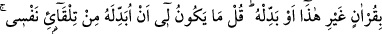
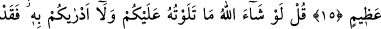
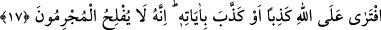

BİZE KAVUŞMAYI
UMMAYANLAR
15. Âyetlerimiz onlara açıkça okunduğu zaman bize kavuşmayı ummayanlar:
“Bundan başka bir Kur’an getir veya bunu değiştir.” dediler. (Ey Muhammed) de
ki: “Onu kendiliğimden değiştirmem benim için olur şey değil, ben ancak bana
vahyedilene uyarım. Eğer Rabb’ime isyan edersem, o büyük günün azabından
korkarım.”
16. (Yine) de ki: “Eğer Allah dileseydi ben size onu okumazdım, O da size onu
bildirmezdi. Bundan önce aranızda bir ömür boyu bulundum. Hâlâ düşünmüyor
musunuz?”
17. Allah’a karşı yalan uydurandan veya O’nun âyetlerini yalanlayandan daha
zâlim kim olabilir? Şüphesiz mücrimler asla iflâh olmazlar.
“Âyetlerimiz” tevhidin hak, şirkin bâtıl olduğunu gösteren Kur’an âyetleri “onlara”
Mekke müşriklerine “açıkça” delâletleri vâzıh olan deliller hâlinde “okunduğu zaman
bize kavuşmayı ummayanlar” yani bizim dîdârımıza ve Biz’e kavuşmaya ümitleri
olmayanlar, demektir. Bu ise onların haşri yalan saymalarından ileri gelmektedir.
et-Te’vîlâtü’n-Necmiyye’de şöyle denir: “Bu ifadede onların Allah ve O’nu taleb
konusunda şevklerinin bulunmadığına işaret vardır. Çünkü şevk diri kalbin özelliğidir.
Oysa onların kalbleri ölü, nefisleri ise diridir. Kur’an’da kalblere uygun nefislere ters
gelen şeyler bulunduğu için nefislerin ehli olanlar onu kabul etmezler.”
“Bundan başka” indirilen bu Kur’an’ın tertib ve düzenine göre olmayan başka “bir
Kur’an getir.” Onda imkansız gördüğümüz öldükten sonra dirilme ve ceza,
hoşlanmadığımız putlarınızın yerilmesi ve tahkir edilmesi gibi şeyler bulunmasın “veya
bunu değiştir” indirilen bu Kur’an nazm ve tertibi üzere bâkî kalsın, fakat bizim
imkansız gördüğümüz ve hoşlanmadığımız hususlara delâlet eden âyetlerin yerine